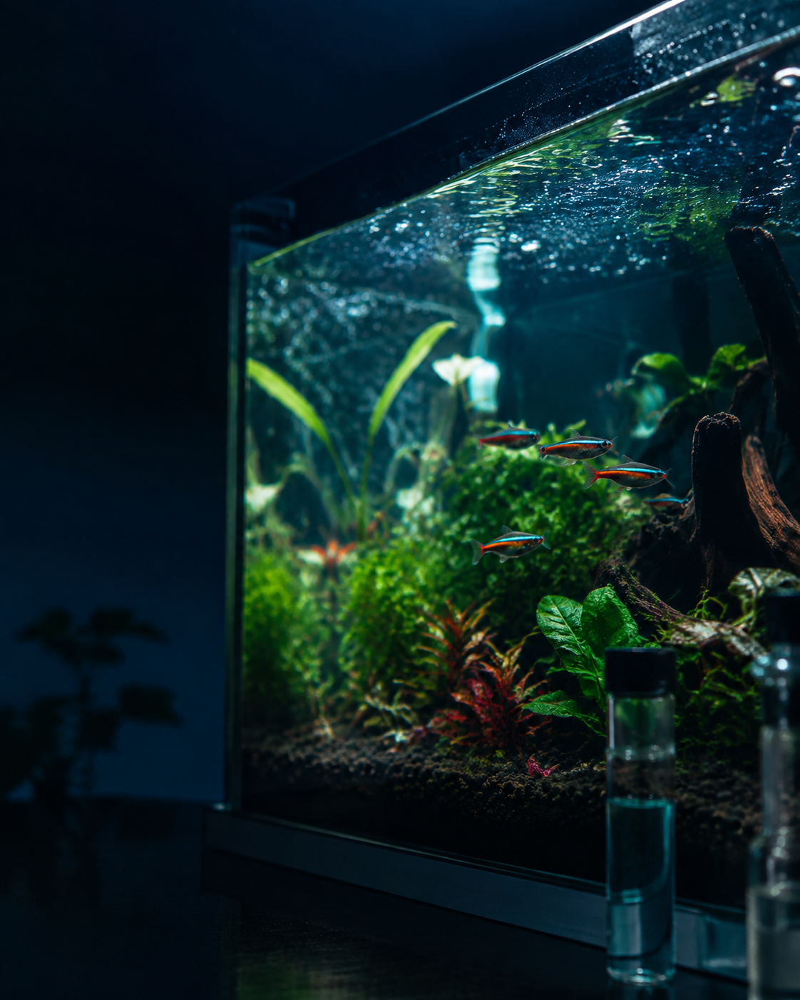

OBSERVE
Comportamento e estado do aquário.
● PARA QUEM JÁ PERDEU UM OU MAIS PEIXES
Descubra o que pode estar errado no seu aquário e saiba o que verificar antes de perder o próximo.
Um protocolo prático de diagnóstico para investigar água, ciclagem, filtragem, oxigenação, alimentação, população e outras causas comuns sem fazer mudanças aleatórias.
QUERO INVESTIGAR MEU AQUÁRIO →
01 Aquário recente?
02 Houve mudança?
VER MAPA →Se isso já aconteceu com você, não compre outro peixe antes de investigar o aquário.
QUERO DESCOBRIR POR ONDE COMEÇAR →Uma sequência simples para saber o que observar, o que verificar e qual passo executar primeiro.
Comportamento e estado do aquário.
Sinais e pontos de atenção.
Os pontos certos em ordem lógica.
O que estiver inadequado.
Veja se a situação melhora.
Responda perguntas simples e vá direto aos pontos que merecem investigação.
Você não começa estudando 60 páginas. Você começa pelo problema que está acontecendo no seu aquário.
QUERO INVESTIGAR MEU AQUÁRIO →SIM ↓
Verifique ciclagem,
amônia e nitrito.
NÃO ↓
As mortes começaram
depois de uma mudança?
SIM ↓
Parâmetros, aclimatação
e compatibilidade.
NÃO ↓
Água, filtragem,
oxigenação e população.
Onde podem surgir sinais de desequilíbrio.
✓ amônia ✓ nitrito ✓ nitratoO que verificar quando o aquário é novo ou instável.
✓ ciclo ✓ bactériasSe filtro, mídias, fluxo e oxigenação merecem atenção.
✓ mecânica ✓ biológicaQuantidade, espaço e convivência dos peixes.
✓ quantidade ✓ tamanho adultoExcesso, frequência, restos e impacto na água.
✓ excesso ✓ frequênciaRotina sem remover o que mantém a estabilidade.
✓ trocas ✓ filtro ✓ mídiasNão é um material para ler uma vez e esquecer. É um protocolo de consulta para usar sempre que algo parecer errado.
SINAL ↓ observe respiração e movimento da água ↓ VERIFIQUE PRIMEIRO oxigenação, temperatura e parâmetros.
SINAL ↓ observe comportamento e outros peixes ↓ VERIFIQUE PRIMEIRO água, compatibilidade e mudanças recentes.
SINAL ↓ observe há quanto tempo e sinais juntos ↓ VERIFIQUE PRIMEIRO água, alimentação e ambiente.
E outros sinais dentro do protocolo.
Ferramentas extras para acompanhar o aquário e consultar rapidamente quando surgir uma dúvida.
Registre parâmetros, alimentação, manutenção, mudanças e comportamento.
Consulte quais pontos merecem atenção primeiro quando notar algo diferente.
Verifique estabilidade, parâmetros, filtragem, espaço e compatibilidade.
Materiais práticos para consultar, registrar e acompanhar o aquário sem depender da memória.
Você não precisa dominar fórmulas. O protocolo mostra o que verificar, por que importa e qual ponto merece atenção.
É justamente para isso que o diagnóstico serve. Você começa pelo estado atual do seu aquário.
Não. É um protocolo de consulta com fluxogramas, checklists, diagnóstico por comportamento e acompanhamento.
Não existe lista obrigatória. O protocolo mostra primeiro o que precisa ser investigado.
Não. O foco é água, ambiente e manejo. Problemas de saúde devem ser avaliados por profissional.
Seu aquário está biologicamente estabilizado?
Você verificou amônia e nitrito?
Sabe se os peixes são compatíveis?
A filtragem está adequada?
Houve alguma mudança antes das mortes?
Outros peixes também apresentaram sinais?
VOCÊ RECEBE:
Pagamento único. Sem mensalidade.
Acesso imediato.
Acesse o material, conheça o método e veja se ele faz sentido para você. Caso não seja o que esperava, poderá solicitar reembolso dentro do período informado no checkout.
Seu acesso inclui 3 materiais extras para consultar, acompanhar e evitar repetir os mesmos erros.
Você não recebe apenas informações. Recebe um sistema de consulta para investigar, acompanhar e tomar decisões com mais clareza.
QUERO ACESSAR O PROTOCOLO COMPLETO →